Sport Club Corinthians Paulista
O Sport Club Corinthians Paulista foi fundado no dia 1º de setembro de 1910, na cidade de São Paulo, por um grupo de operários do bairro do Bom Retiro. O clube nasceu com a ideia de ser um time do povo, diferente dos clubes elitizados da época.
O nome Corinthians foi inspirado no time inglês Corinthian-Casuals, que fazia excursões pelo Brasil naquele período. Desde o início, o clube se destacou pela forte ligação com sua torcida, conhecida hoje como a Fiel Torcida.
Primeiros títulos
O primeiro grande título do Corinthians veio em 1914, quando conquistou o Campeonato Paulista de forma invicta. A partir daí, o clube passou a crescer e se firmar como uma das principais forças do futebol paulista e brasileiro.
Anos difíceis e superação
Entre 1954 e 1977, o Corinthians viveu um longo período sem títulos importantes. Mesmo assim, a torcida nunca abandonou o time. Em 1977, o jejum terminou com a conquista do Campeonato Paulista, um dos momentos mais marcantes da história do clube.
Era moderna e conquistas
Nos anos 1990 e 2000, o Corinthians conquistou diversos títulos importantes, incluindo Campeonatos Brasileiros e Copas do Brasil. O maior momento da história do clube aconteceu em 2012, quando venceu a Copa Libertadores da América de forma invicta e, no mesmo ano, conquistou o Mundial de Clubes da FIFA.
O time do povo
Até hoje, o Corinthians é conhecido como o time do povo, representando luta, raça e paixão. Sua torcida é uma das maiores do mundo, e o clube segue sendo um dos mais importantes do futebol brasileiro.
Nossa Casa
A Neo Química Arena, localizada em Itaquera, na zona leste de São Paulo, é o estádio do Sport Club Corinthians Paulista e um dos mais modernos do Brasil. Sua construção começou em 2011, inicialmente para receber a abertura da Copa do Mundo de 2014, e representou um marco importante de desenvolvimento urbano para a região. Com capacidade para mais de 48 mil torcedores, o estádio foi projetado para oferecer conforto, visibilidade e tecnologia de ponta, tornando-se rapidamente um símbolo de orgulho para a torcida corinthiana.
Inaugurada oficialmente em maio de 2014, a arena já foi palco de grandes momentos do futebol nacional e internacional, além de shows e eventos culturais. Desde então, a Neo Química Arena consolidou-se como a casa do Corinthians, sendo cenário de conquistas históricas, como títulos importantes e jogos memoráveis. Mais do que um estádio, ela representa a força, a identidade e a paixão de milhões de torcedores espalhados pelo Brasil.
Sala de Troféus
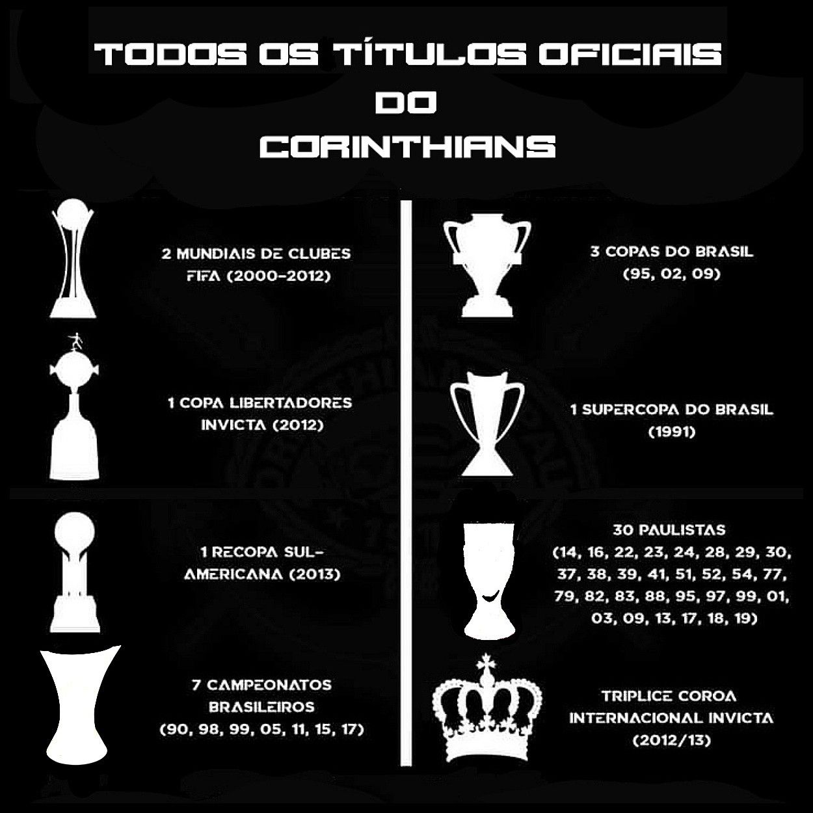
Nossos atletas
Goleiro
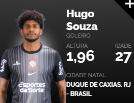
Defensores
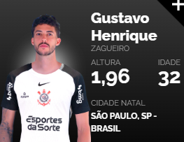


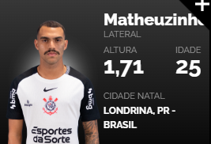
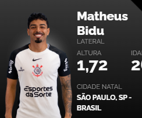
Meias
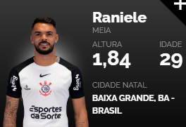
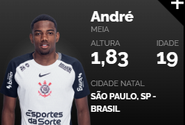
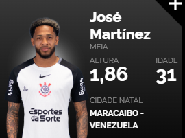
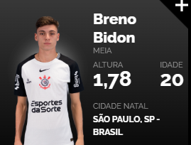
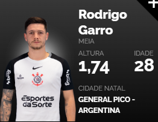
Atacantes
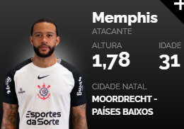
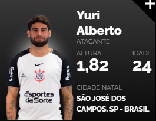
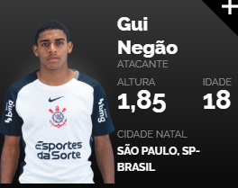
Nossos Produtos
Camisa Corinthians 2024/2025
R$299,99

Camisa Corinthians 2025/2026
R$399,99

Corta Vento Corinthians
R$399,99

Camisa Corinthians Democracia Corinthiana
R$229,99
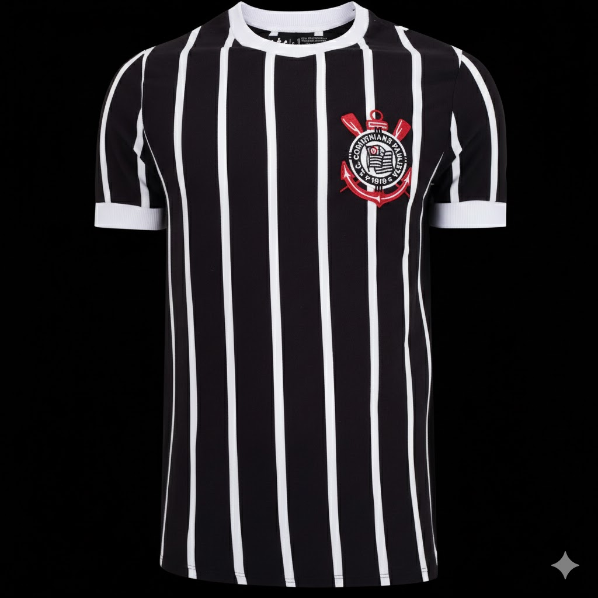Boné Corinthians
R$199,99

Capinha para celular Corinthians
R$99,99